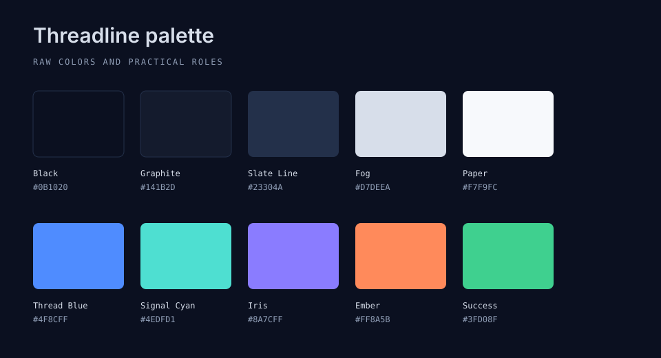
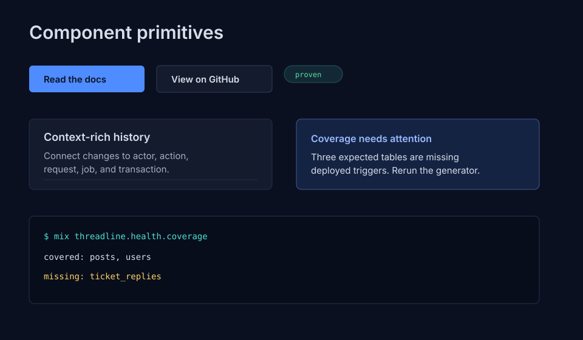
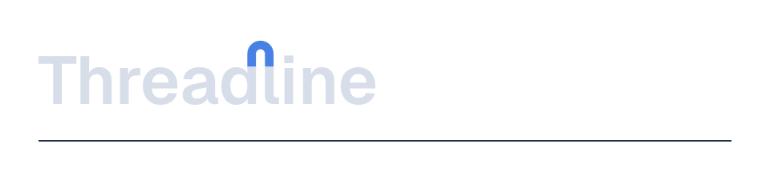
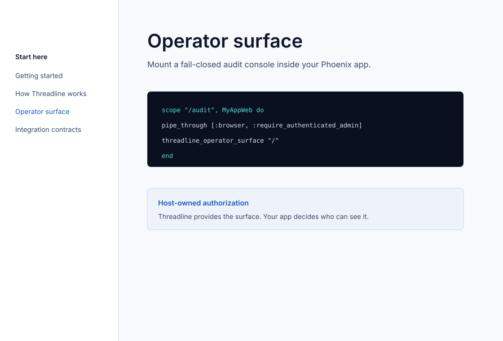
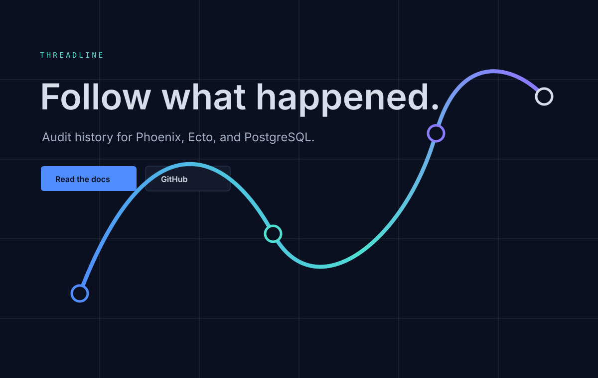
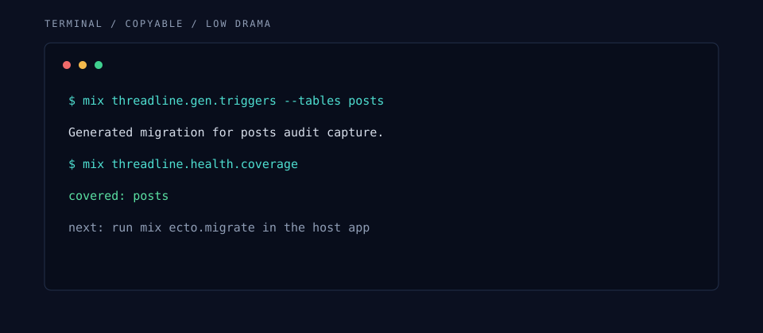

8distinctive
The line metaphor fits audit history. Keep it away from generic node art.
Threadline brandbook
A pressure-tested brand system for an Elixir audit library: clear strategy, practical tokens, source SVG assets, UI guidance, and copy that stays credible with engineers.
Section 1
The original brand work had the right strategic center. It needed fewer inspirational fragments and more buildable artifacts.
Threadline already owns a good idea: connected audit history. The risk is not that the brand is weak. The risk is generic execution: abstract nodes, compliance cliches, security shields, and blue-purple glow with no domain meaning.
Section 2
The decision model is compact: if a design choice does not make audit history more followable, it probably does not belong.
Phoenix, Ecto, Postgres, platform, SRE, security, support, and OSS maintainers.
Calm, precise, grounded, serious without intimidation.
Connect changes to actor, action, request, transaction, and evidence context.
A continuous line connecting discrete events into an intelligible path.
Lucid, composed, technical, evidence-oriented, quietly confident.
Flashy, cute, militaristic, cyberpunk, compliance-bureaucratic.
Do not use shields, locks, stock people, generic node graphs, or "trust platform" fluff.
Section 3
Scores are intentionally critical. The brand should earn execution confidence without creating redesign churn.
The line metaphor fits audit history. Keep it away from generic node art.
Precise voice, real APIs, real workflows, low-BS OSS posture.
Understated, stack-specific, and practical for Phoenix/Ecto teams.
Coherent direction. Human wordmark polish can wait until launch stakes rise.
Raw and semantic roles now exist for dark and light surfaces.
HTML, Markdown, JSON, CSS, and SVG keep the repo light.
Section 4
The brand has to survive boring surfaces: README, Hex.pm, HexDocs, API references, terminal snippets, and small icons.
Use concise copy, standard badges, and the primary logo only where it helps. Avoid a heavy raster hero.
Lead with technical value. Let ExDoc conventions breathe; brand through type, logo, and code readability.
Use "Follow what happened" and a line-based audit path. Do not fake a dashboard unless it reflects real behavior.
Use real commands, copyable snippets, dark code blocks, and IBM Plex Mono for identifiers.
Use the compact line mark. Test at 16px and in monochrome before public release.
Label request, action, transaction, change, evidence, and export. Avoid unlabeled node webs.
Error, empty, success, warning, selected, and disabled states need text or structure, not just color.
Use the monochrome mark or wordmark. This is secondary to docs and launch assets.
Sections 5 and 6
The right move is not a redesign. The right move is sharpening what was already strong into usable source artifacts.
Section 7
The token system is intentionally small. It gives docs and marketing enough structure without competing with the operator surface CSS.
| Role | Dark token | Light token | Use |
|---|---|---|---|
| Background | --tl-color-bg | .tl-theme-light --tl-color-bg | Page foundation. |
| Surface | --tl-color-surface | --tl-color-surface | Panels, cards, tables. |
| Accent | --tl-color-accent | --tl-color-accent | Links, primary CTA, selected path. |
| Signal | --tl-color-signal | --tl-color-signal | Correlation, trace, positive flow. |
| Focus | --tl-focus-ring | --tl-focus-ring | Keyboard-visible focus. |
Section 8
Threadline does not need a mascot or a complex abstract icon. A wordmark plus a simple line mark carries the concept.
Use for README headers, landing pages, slides, and social collateral.
Use for favicon, avatar, docs sidebar, and compact surfaces.
Use for print, stickers, constrained surfaces, and single-color reproduction.
Test at 16px and 32px. Keep the mark recognizable without text.
Section 9
These are implementation specimens, not decorative screenshots. Create raster exports only when a downstream platform requires them.






Section 10
Threadline should sound like a calm senior engineer: exact, useful, and generous with context.
Capture changes, connect them to context, and follow the full history.
Revolutionary audit intelligence for modern teams.
| Surface | Copy |
|---|---|
| One-line description | Audit history for Phoenix, Ecto, and PostgreSQL. |
| GitHub description | Open-source audit history for Phoenix, Ecto, and PostgreSQL. |
| Hero headline | Follow what happened. |
| Error | Could not verify trigger coverage for ticket_replies. Rerun the trigger generator, migrate, then check coverage again. |
| Empty state | No audit changes match these filters. Clear the table filter or widen the time range. |
| Success | Export queued. Threadline will keep the filtered timeline and evidence bundle together. |
Section 11
The brand works best when marketing and docs share the same technical spine: capture, semantics, exploration, operations.
Section 12 and 13
All killer, no filler: commit source assets, generate raster only when a real publishing surface requires it.
brandbook/
README.md
index.html
brand-book.md
pressure-test.md
tokens.json
tokens.css
logo-primary.svg
logo-mark.svg
logo-monochrome.svg
favicon.svg
social-card.svg
examples/*.svgSection 14
The brand is ready only if it can guide real implementation without causing needless churn.
Yes. Concept, tokens, examples, and layout rules are concrete.
Yes. Tokens are JSON/CSS and assets are SVG.
Yes, if runtime UI tokens and brandbook tokens stay in their lanes.
Yes. The folder has a README and source docs.
Yes, if proof stays ahead of vibe.
Yes. Both themes have roles and examples.
Mostly. Favicon still deserves human review at 16px.
Yes. Connected audit history belongs to Threadline.